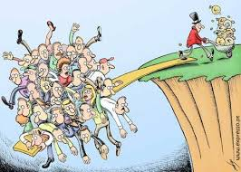

Noticias Cidades
Ultimas notícias do Brasil
Elite do funcionalismo acumula aumento salarial acima da inflação nos últimos 23 anos
A elite do funcionalismo público do Poder Executivo federal, que vem liderando os recentes movimentos por reajuste salarial, acumulou aumentos de salário superiores à inflação nos últimos 23 anos.
Segundo levantamento publicado pelo economista e doutor em Direito Bruno Carazza, com base em dados oficiais, algumas carreiras acumularam reajuste próximo de 500% ou até 600% entre 1998 e 2021, bem acima da variação do Índice Nacional de Preços ao Consumidor Amplo (IPCA) nesse intervalo, de aproximadamente 326%.
Houve, portanto, um aumento no poder de compra desses profissionais – e esse ganho ocorreu mesmo com a falta de reajustes a partir de 2019, no governo Jair Bolsonaro. Ou seja: ainda que os salários não tenham acompanhado a inflação nos últimos três anos, as carreiras mais bem-remuneradas ainda acumulam um aumento real expressivo desde 1998.
"Embora seja verdade que os rendimentos desses servidores [da elite do funcionalismo] vêm sendo corroídos pela inflação no governo Bolsonaro, houve reajustes significativamente superiores à inflação para essas carreiras nos governos de FHC e Lula, e em alguns casos também no período Dilma II-Temer", escreveu Carazza em seu perfil no Twitter.
De acordo com o levantamento, servidores do ciclo de gestão do Poder Executivo – responsáveis por atividades necessárias à gestão e avaliação de políticas públicas direcionadas à promoção do desenvolvimento nacional e à melhora do acesso a serviços públicos – acumularam aumento de 609,9% nos últimos 23 anos.
A remuneração de advogados e procuradores do Executivo subiu 608,2% no mesmo período. Ainda segundo a pesquisa de Carazza, diplomatas, delegados da Polícia Federal e auditores fiscais tiveram, respectivamente, reajustes acumulados de 550,8%, 498,9% e 478,6%.
Os maiores reajustes para delegados da Polícia Federal e servidores do ciclo de gestão ocorreram no segundo mandato do ex-presidente Fernando Henrique Cardoso, entre 1999 e 2022. Auditores fiscais, advogados e procuradores do funcionalismo público federal, por sua vez, tiveram os maiores aumentos durante o primeiro governo do ex-presidente Lula, entre 2003 e 2006.
Carreiras bem-remuneradas do funcionalismo lideram pressão por aumento
Em seu perfil no Twitter, o economista Bruno Carazza afirmou que as categorias que comandaram a paralisação da última terça-feira (18) "já recebem uma remuneração mensal muito elevada", citando os vencimentos de delegado da PF (R$ 30.936,91), auditor da Receita (R$ 30.303,62), e advogado da União e procurador da Fazenda (R$ 27.303,70, mais honorários de até R$ 10 mil por mês).
Os protestos de terça e os que são esperados para os próximos dias 25 e 26 de janeiro foram mobilizados, especialmente, por servidores da Receita Federal e do Banco Central.
O gasto médio mensal da União com auditores-fiscais da Receita é de R$ 29,3 mil, e, no caso dos analistas do Banco Central, a despesa é de R$ 26,2 mil, segundo levantamento do jornal O Estado de S. Paulo na base de dados do governo federal. Os dados não incluem bonificações.
Enquanto o primeiro grupo reivindica um reajuste salarial de cerca de 26%, o segundo pede a negociação do bônus de produtividade e a recomposição do orçamento do órgão.
Também participaram do movimento de terça outras categorias, que ocupam as primeiras posições de uma lista de 22 carreiras mais bem remuneradas do funcionalismo, entre elas auditores-fiscais do trabalho, peritos criminais federais, delegados da PF, analistas de planejamento e orçamento, procuradores federais, advogados da União entre outros. Segundo a reportagem de O Estado de S. Paulo, o gasto do governo federal com essas 22 categorias do funcionalismo foi de R$ 33,3 bilhões em 2021.
O que dizem os servidores
A pressão por reajustes ganhou força depois que o governo acenou com reajuste apenas para funcionários da Polícia Federal, Polícia Rodoviária Federal e Departamento Penitenciário Nacional (Depen). Na visão de especialistas, a medida pode ferir o princípio constitucional da isonomia.
Parte dos servidores sustenta a legitimidade dos movimentos sob o argumento de que desenvolveram trabalhos de "alta complexidade" ao longo da pandemia. Um deles foi a implementação do sistema Pix, a cargo do Banco Central.
"Quanto à ideia de que é uma greve de ‘elite’, as pessoas não entendem que o Pix, a estabilidade financeira e conquistas de altíssima complexidade e responsabilidade têm que vir de órgão igual ao Banco, com autonomia e quadro altamente qualificado e motivado", disse à Gazeta do Povo Fabio Faiad, presidente do Sindicato Nacional dos Funcionários do Banco Central (Sinal).
Para isso, defende Faiad, "os salários têm que ser condizentes". "Estamos simplesmente pedindo a reposição, é justo para todo trabalhador brasileiro", diz.
Apesar de reconhecerem o contexto orçamentário apertado, servidores dizem que é possível, por exemplo, drenar recursos do "Fundão" – que em 2022 será de R$ 4,9 bilhões, segundo a Lei Orçamentária Anual (LOA) aprovada pelo Congresso – para as demandas dos servidores.
"O governo tem uma certa tranquilidade para conceder um reajuste linear e atender, senão integralmente o nosso pedido de recomposição das perdas, ao menos parcialmente", diz Rudinei Marques, presidente do Fórum Nacional Permanente das Carreiras Típicas de Estado (Fonacate).
Quanto custa o funcionalismo público federal
A folha de servidores federais – em que são considerados cerca de 1,2 milhão de ativos e inativos – custou R$ 319 bilhões em 2018, segundo o Atlas do Estado Brasileiro, publicado pelo Instituto de Pesquisa Econômica Aplicada (Ipea). Desse total, 56,5% foi gasto com trabalhadores ativos e 43,5%, com inativos. A maior parcela da despesa com pessoal ativo é do Executivo: 75,7%, informa o instituto.
Segundo levantamento do Banco Mundial, entre 2008 e 2018, houve um crescimento real médio da folha de pagamentos de funcionários públicos ativos do governo federal de 2,5% ao ano, saltando de R$ 105,4 bilhões para R$ 132,7 bilhões.
Outra pesquisa sobre o tema, realizada pelo Instituto Millenium e publicada em 2020, constatou que entre 2008 e 2019 as despesas com o funcionalismo federal ativo cresceram 125%, enquanto a quantidade de servidores cresceu de 545 mil para 605 mil, um aumento de 11%.
Na época da publicação do levantamento do Instituto Millenium, os servidores federais correspondiam a apenas 10% da força de trabalho no setor público, e o custo médio de um funcionário federal era de R$ 242,4 mil ao ano, 5,7 vezes o custo médio do servidor municipal e 2,7 vezes o do estadual.
Servidores brasileiros têm salários mais altos que a média internacional.
Conforme o Banco Mundial, "a combinação de alto gasto com pessoal, como proporção do PIB, e moderada proporção de servidores públicos, como proporção do emprego, sugere uma situação em que os servidores públicos brasileiros têm altos salários, quando comparados com os dos outros países".
A diferença entre a média dos salários dos servidores federais e profissionais do setor privado com as mesmas características chega a 96%, segundo o Banco Mundial. "Em 2019, 44% [dos servidores federais] receberam mais de R$ 10 mil por mês; 22% receberam mais de R$ 15 mil; e 11% receberam mais de R$ 20 mil", diz o documento.
A Confederação Nacional da Indústria (CNI) afirma que a vantagem salarial de servidores federais em relação a profissionais do setor privado é "atípica" para padrões internacionais, tendo em conta os países da OCDE.
"Comparando servidores públicos altamente qualificados com seus equivalentes no setor privado é possível notar que, em geral, os cargos no setor público oferecem uma faixa salarial mais estreita. Segundo dados da Pnad 2015, os servidores públicos federais têm uma renda particularmente alta: dois terços encontram-se entre os 10% com maior renda no país, 83% estão entre os 20% mais ricos, e quase todos (94%), entre os 40% mais ricos", afirma nota econômica da CNI.
Outras notícias do Brasil
-
Chuvas
O que as chuvas deste mês significam para os reservatórios e a conta de luz
-
Seca
Prejuízo com a seca nas lavouras sobe para R$ 25,6 bi e Paraná pede ajuda federal
-
Caminhões cegonha
DAF Caminhões Brasil começa a exportar veículos produzidos em Ponta
-
Fim do rodízio do PR
A Sanepar acertou ao decretar o fim do rodízio no abastecimento de água?